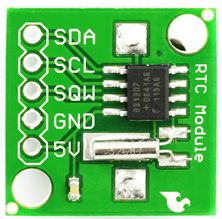
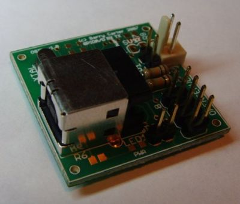

A weblog focused on interesting circuits, ideas, schematics and other information about microelectronics and microcontrollers.
E-books
Disclaimer
Because I have not tested all electronic circuits mentioned on this pages, I cannot attest to their accuracy; therefore, I do not provide a warranty of any kind and cannot be held responsible in any manner.
I2C
I2C example with the DS1307 RTC
7. March 2009 - 11:35 — adminAn example of connecting I2C device to AVR - how to connect DS1307 RTC module with an Arduino?

Open Source USB to I2C Interface
28. February 2009 - 12:20 — adminBased on great Till Harbaum work (already mentioned here), Barry Carter makes this terrific USB to I2C interface.

I2C Tiny USB
5. October 2008 - 18:16 — adminAttach any I2C client chip (thermo sensors, AD converter, displays, relais driver, ...) to your PC via USB ... quick, easy and cheap! Drivers for Linux, Windows and MacOS available.
I2C LCD back-pack
23. September 2008 - 8:57 — adminThe I2C LCD Back-Pack is a small(ish) PCB that can be plugged onto the back of an LCD so that you may control it over an I2C bus.
PICkit serial analyzer
5. September 2008 - 9:37 — adminThe PICkit Serial Analyzer is a low-cost USB-based tool used to direct communication between a PC and an external serial device.
I2C EEPROM programmer
10. July 2008 - 14:40 — adminThis EEPROM programmer reads, writes and erases I²C 24C EEPROM devices through a PC serial port (RS-232) interface.